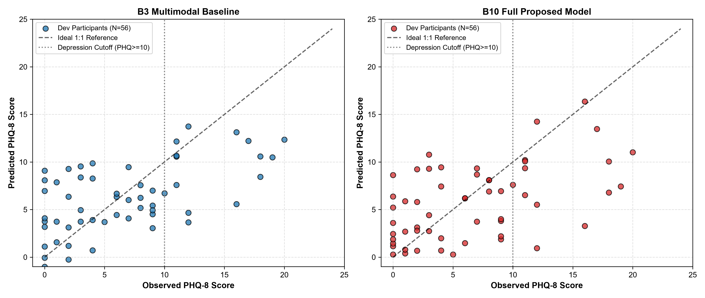
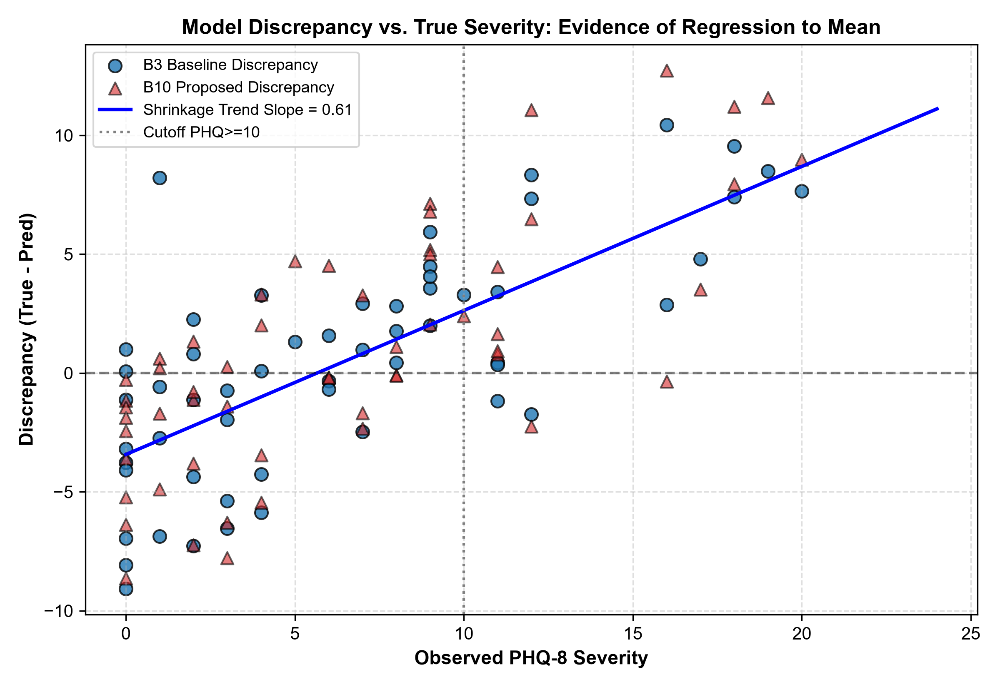
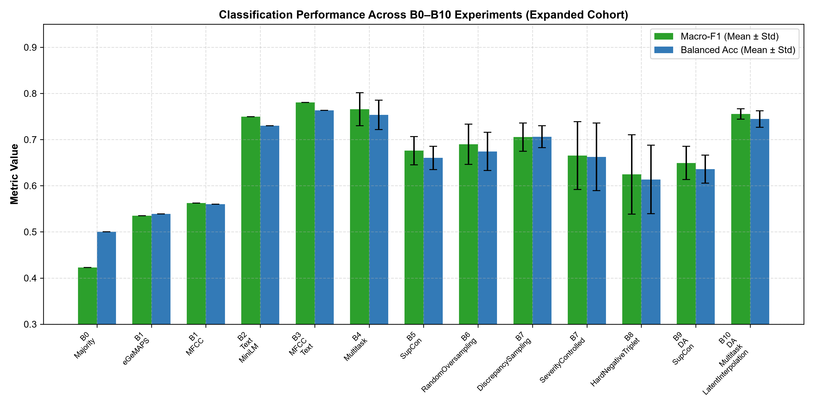
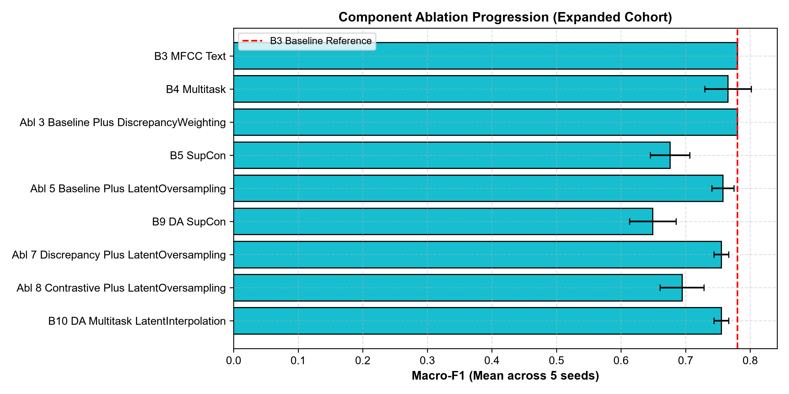
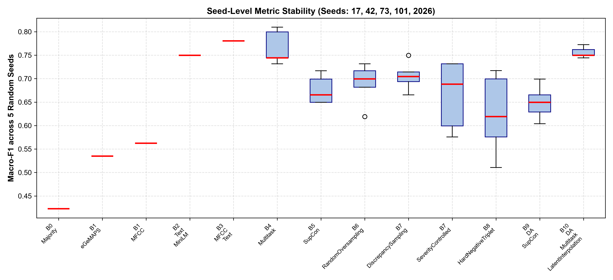
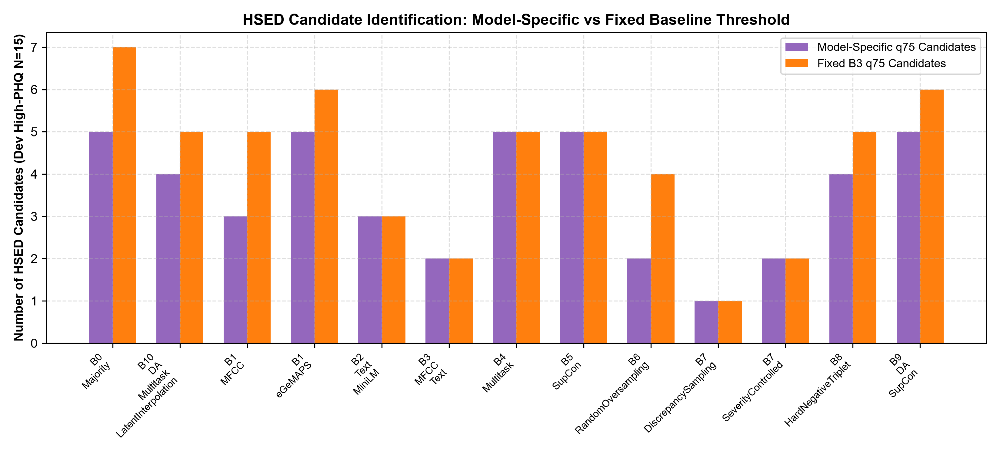

Evaluation Scope: Expanded DAIC-WOZ Cohort ($N=219$ labeled participants) | Date: October 15, 2026
Key Finding: Multimodal baseline B3 (MFCC + MiniLM with Ridge/Logistic regression) achieves top performance (Macro-F1 0.7804, MAE 3.791). Full proposed model B10 (MDA-Net) does not provide a statistically significant improvement (p=0.718). HSED discrepancy reflects model shrinkage, not a distinct clinical phenotype.






| model_name | macro_f1_mean | macro_f1_std | balanced_accuracy_mean | precision_mean | recall_mean | mae_mean | mae_std | rmse_mean | r2_mean |
|---|---|---|---|---|---|---|---|---|---|
| Ablation_3_Baseline_Plus_DiscrepancyWeighting | 0.780392 | 0.000000 | 0.763415 | 0.750000 | 0.600000 | 3.870570 | 0.000000 | 4.793314 | 0.283426 |
| B3_MFCC_Text | 0.780392 | 0.000000 | 0.763415 | 0.750000 | 0.600000 | 3.791255 | 0.000000 | 4.758532 | 0.293787 |
| B4_Multitask | 0.765783 | 0.035954 | 0.753659 | 0.707959 | 0.600000 | 3.846771 | 0.075696 | 5.064038 | 0.199896 |
| Ablation_5_Baseline_Plus_LatentOversampling | 0.758092 | 0.017076 | 0.748780 | 0.685931 | 0.600000 | 3.865982 | 0.066006 | 5.078350 | 0.195387 |
| Ablation_7_Discrepancy_Plus_LatentOversampling | 0.755490 | 0.011471 | 0.744553 | 0.691275 | 0.586667 | 3.858907 | 0.055035 | 5.064463 | 0.199947 |
| B10_DA_Multitask_LatentInterpolation | 0.755490 | 0.011471 | 0.744553 | 0.691275 | 0.586667 | 3.835667 | 0.056136 | 5.053717 | 0.203317 |
| B2_Text_MiniLM | 0.749553 | 0.000000 | 0.730081 | 0.727273 | 0.533333 | 3.894103 | 0.000000 | 4.857896 | 0.263986 |
| B7_DiscrepancySampling | 0.705487 | 0.030657 | 0.706179 | 0.579677 | 0.573333 | 4.095483 | 0.206019 | 5.060301 | 0.199484 |
| Ablation_8_Contrastive_Plus_LatentOversampling | 0.694622 | 0.033966 | 0.685691 | 0.596007 | 0.493333 | 3.938349 | 0.227868 | 5.003327 | 0.218553 |
| B6_RandomOversampling | 0.689740 | 0.043696 | 0.674309 | 0.667273 | 0.426667 | 3.918264 | 0.161594 | 4.904589 | 0.249029 |
| B5_SupCon | 0.675978 | 0.030529 | 0.660325 | 0.628182 | 0.413333 | 4.010835 | 0.129376 | 5.034013 | 0.209390 |
| B7_SeverityControlled | 0.665307 | 0.073645 | 0.662602 | 0.546465 | 0.466667 | 4.113961 | 0.349643 | 5.175203 | 0.161209 |
| B9_DA_SupCon | 0.649312 | 0.036062 | 0.636098 | 0.604488 | 0.360000 | 3.994011 | 0.139791 | 5.033371 | 0.209479 |
| B8_HardNegativeTriplet | 0.624449 | 0.085936 | 0.613659 | 0.580924 | 0.320000 | 4.413882 | 0.126924 | 5.336519 | 0.111492 |
| B1_MFCC | 0.562299 | 0.000000 | 0.560163 | 0.400000 | 0.266667 | 4.613621 | 0.000000 | 5.447688 | 0.074420 |
| B1_eGeMAPS | 0.534929 | 0.000000 | 0.539024 | 0.375000 | 0.200000 | 4.904646 | 0.000000 | 5.991666 | -0.119657 |
| B0_Majority | 0.422680 | 0.000000 | 0.500000 | 0.000000 | 0.000000 | 4.743317 | 0.000000 | 5.662859 | -0.000141 |